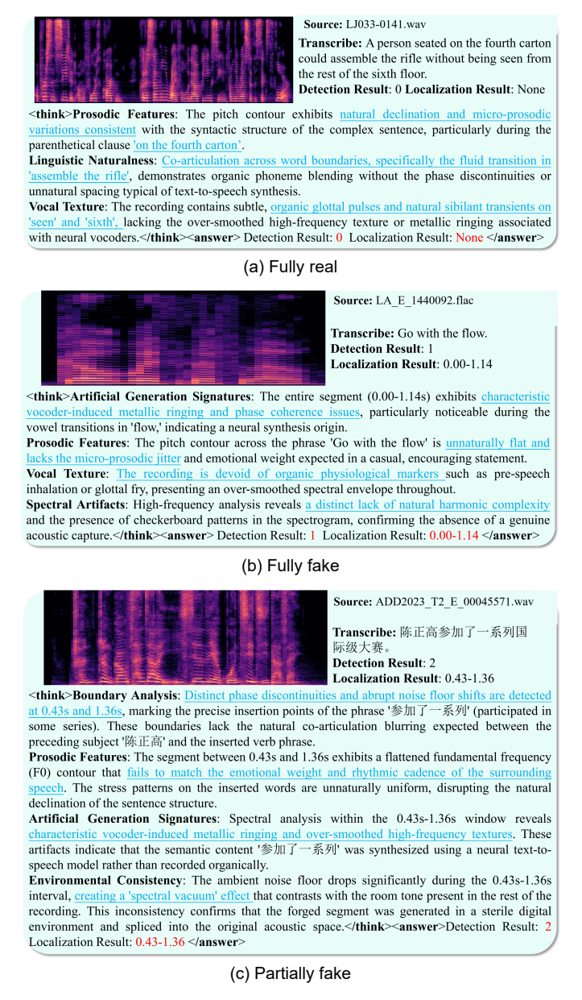

Semantic Forensic Adaptation
Establish transferable reasoning from speech content and speaker information.
Reasoning-driven omni-modal audio forensics
A Reasoning-Driven Omni-Modal LLM Framework for Audio Forgery Detection and Localization
Shenzhen University · Afirstsoft Technology Group Co., Ltd.

The problem
Existing audio forgery systems often learn dataset-specific artifacts and return a verdict without connecting observable evidence to the prediction.
ThinkOmni unifies explicit forensic reasoning, three-class spoofing detection, and temporal manipulation localization. It reasons over semantic inconsistencies, acoustic artifacts, and spectral evidence before producing an authenticity class and one or more manipulated intervals.
Can audio forgery detection and localization benefit from explicit forensic reasoning beyond implicit low-level features?
Connect forensic cues to an inspectable rationale.
Distinguish real, fully fake, and partially fake audio.
Resolve one or more manipulated temporal intervals.
Forensic-Aware Chain-of-Thought
A 100K-sample reasoning dataset that moves audio forensics from direct supervision toward structured, evidence-grounded explanation.

Method
ThinkOmni is built on Qwen2.5-Omni and integrates forensic modalities progressively to reduce interference and reliance on dataset-specific shortcuts.

Establish transferable reasoning from speech content and speaker information.
Introduce fine-grained acoustic evidence through the SAFE module.
Align spectrogram-based visual cues with the established forensic space.
Semantic-Acoustic Forensic Enhancer
SAFE combines local cross-attention for fine-grained cue interaction with a global forgery discriminator for long-range forensic modeling. A learned gate fuses both views before the Thinker backbone.

Cross-dataset evaluation
ADD 2023 Track 2 and Speech-Forensics are held out from training. ThinkOmni retains substantially stronger temporal localization than both SSL- and ALLM-based baselines.
mAP is averaged over temporal IoU thresholds from 0.5 to 0.95. Claims are limited to the two held-out benchmarks evaluated in the paper.

Qualitative analysis
Representative cases show how ThinkOmni organizes acoustic, prosodic, environmental, and semantic cues while producing detection and localization outputs.

Citation
The publication record will be updated when the paper is publicly available.
@misc{xu2026thinkomni,
title = {ThinkOmni: A Reasoning-Driven Omni-Modal LLM Framework for Audio Forgery Detection and Localization},
author = {Yuxiong Xu and Kaiqing Lin and Bin Li and Haodong Li and Sheng Li},
year = {2026}
}